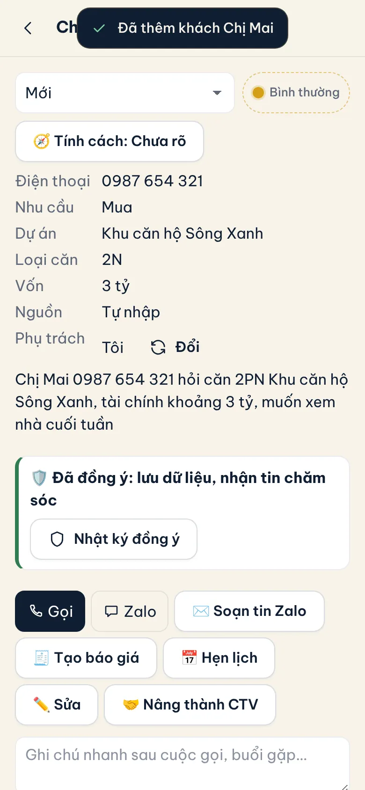
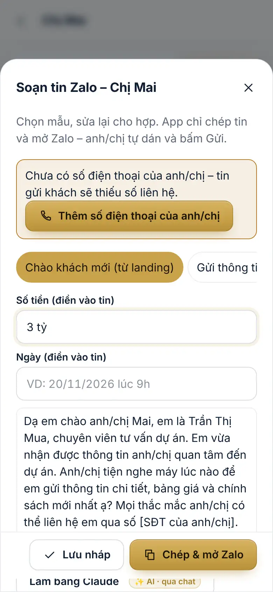
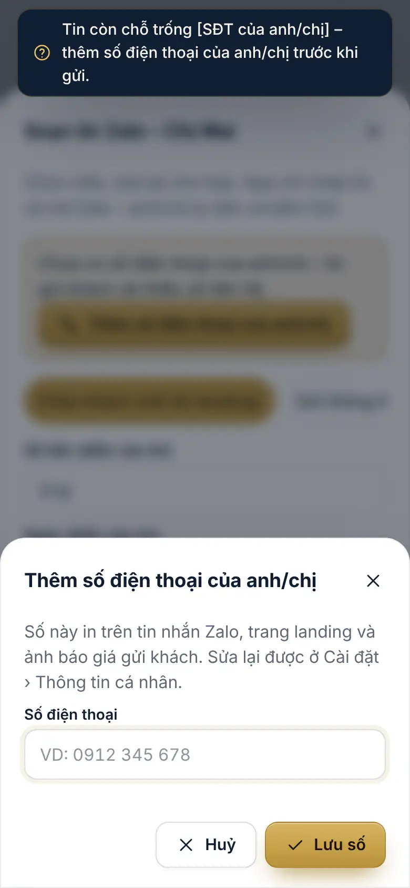
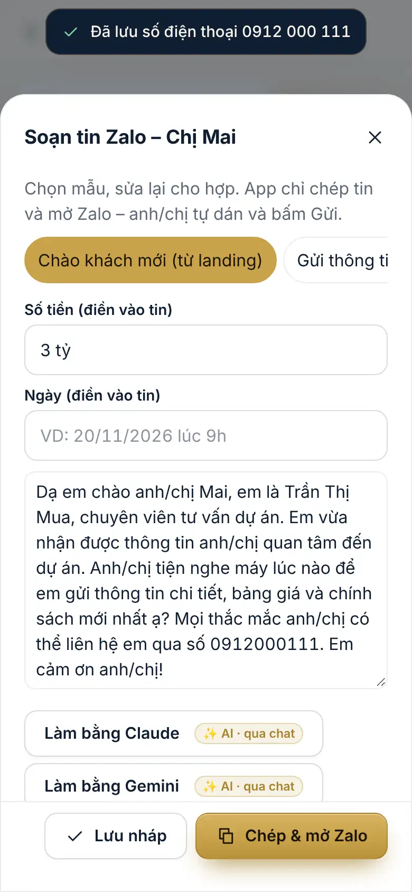

Gọi và nhắn Zalo cho khách
App không tự gửi tin thay anh/chị. App mở cuộc gọi, chép sẵn tin và mở Zalo – anh/chị tự bấm Gửi.
Gọi
- Bấm Khách, mở danh sách khách.
- Bấm nút 📞 (nền tối) cạnh tên khách, hoặc nút 📞 Gọi trong hồ sơ khách.
- Điện thoại mở cuộc gọi tới số khách. Lần gọi được ghi vào Dòng thời gian của khách.

Mở Zalo nhanh
Bấm 💬 Zalo cạnh tên khách: Zalo mở đúng cuộc trò chuyện với số đó (dùng số Zalo riêng nếu hồ sơ có).
Soạn tin từ mẫu
- Mở hồ sơ khách, bấm ✉️ Soạn tin Zalo.
- Chọn một mẫu: Chào khách mới, Gửi thông tin dự án, Nhắc lịch xem nhà, Chúc mừng sinh nhật, Nhắc đóng tiền đợt…
- Điền Số tiền / Ngày nếu mẫu cần. Sửa lời trong khung cho hợp.

- Bấm Chép & mở Zalo.
Lần đầu, nếu chưa có số điện thoại của anh/chị, app hỏi số để in vào tin. Gõ số, bấm ✓ Lưu số (sửa lại ở Cài đặt › Thông tin cá nhân).

- App báo "Đã chép tin. Dán vào Zalo rồi bấm Gửi." và mở Zalo.
- Trong Zalo: giữ tay vào ô nhập tin → Dán → Gửi.

Chưa muốn gửi ngay? Bấm ✓ Lưu nháp – nháp nằm trong Chờ duyệt.
← Mục lục · Tiếp: Nhắc việc & lịch hẹn